초음파비파괴검사산업기사(구) (2005-03-20 기출문제)
1과목: 초음파탐상시험원리
1. 압전재료로서 다음 중 송신효율이 가장 좋은 것은?
- 황산리튬
- 수정
- 산화 은
- 티탄산 바륨
(정답률: 알수없음)

2. 최근 광대역 초음파 탐촉자의 진동자 재료로 널리 사용되고 있는 재료는?
- 고분자재료(PVDF)
- 수정
- 황산리듐
- 티탄산바륨
(정답률: 알수없음)
3. 다음 중 탐촉자의 감도를 최대로 높이기 위한 방법은?
- 수직 탐촉자를 사용한다.
- 직경이 큰 진동자를 사용한다.
- 펄스폭이 크고, 진동자를 기본 공진주파수가 되도록 한다.
- 탐촉자의 밴드폭을 가능하면 크게 한다.
(정답률: 알수없음)
4. 전자방출(Electron emission) 방사선투과시험의 원리를 바르게 설명한 것은?
- 쌍극자 회절에 의한 농도차
- 결정구조로 인한 회절
- 높은 원자번호의 재질에서 더 많은 방출로 기인한 전자방출의 차
- 에너지가 다른 전자의 투과능력에 의해 형성된 필름농도차
(정답률: 알수없음)
5. 일반적으로 경사각탐촉자에서 굴절하여 시험체에 전파하는 초음파의 종류는?
- 종파
- 횡파
- 판파
- 표면파
(정답률: 알수없음)
6. 초음파탐상시험에서 데이타의 신뢰성을 확보하기 위한 항목과 거리가 먼 것은?
- 결함평가의 정량화
- 시간적 재현성의 확보
- 제조공정의 자동화
- 기기의 성능관리
(정답률: 알수없음)
7. 다음 중 원거리 음역에서 음속의 퍼짐이 가장 적은 탐촉자는?
- 1MHz의 직경 3/8인치 진동자
- 5MHz의 직경 1인치 진동자
- 2.25MHz의 직경 1인치 진동자
- 5MHz의 직경 3/8인치 진동자
(정답률: 알수없음)
8. 초음파의 특이성에 대한 설명으로 틀린 것은?
- 전자파에 비해 전파속도가 느리다.
- 주파수가 높을수록 공기중을 전파하기 어렵다.
- 음향임피던스가 다른 물질의 경계면에서 반사한다.
- 전자파는 물질에 존재하지 않는 진공 중에서는 전파하지 않지만, 초음파는 진공 중에서도 전파한다.
(정답률: 알수없음)
9. 종파 및 횡파에 대한 금속 재질내에서의 굴절각 계산을 위한 법칙은?
- 프라운 호퍼의 법칙
- 스넬의 법칙
- 프레스넬장 법칙
- 샤를의 법칙
(정답률: 알수없음)
10. 5Q20N 수직탐촉자를 이용하여 두께 40mm인 시험체의 건전부 제1저면 에코 및 제2저면 에코의 크기가 각각 HB1 =25dB, HB2 = 27dB일 때 산란에 의한 감쇠계수α(dB/mm)는 얼마인가?(단, 반사 및 확산에 의한 손실은 무시할 정도로 적다.)
- 0.047
- 0.025
- 0.014
- 0.084
(정답률: 알수없음)
11. 초음파의 반사와 통과에 가장 크게 영향을 미치는 인자는 다음 중 무엇인가?
- 파장
- 주파수
- 음향 임피던스
- 음속
(정답률: 알수없음)
12. 비파괴시험 방법에 대해 기술한 것으로 올바른 것은?
- 초음파탐상시험은 구조물을 가열했을 때에 생기는 표면온도분포를 이용하는 방법이다.
- 광탄성실험법은 구조물을 가열했을 때 생기는 변위에 관계한 간섭파를 관찰하여 결함을 판정하는 방법이다.
- 음향방출시험은 재료가 파괴되는 과정에서 미세한 균열의 진전에 수반하는 응력파를 검출하고 파괴예지나 방지에 이용되는 방법이다.
- 컴퓨터 단층촬영법은 파동의 간섭성을 이용하여 본래의 상을 재생하는 홀로그래피(Holography)를 이용한 방법이다.
(정답률: 알수없음)
13. 초음파가 두께 100mm의 알루미늄 관을 통과하는데 걸리는 시간은? (단, 알루미늄관의 음속 = 6300m/sec)
- 6.3μsec
- 63μsec
- 31.7μsec
- 15.9μsec
(정답률: 알수없음)
14. 노치(notch)와 응력집중에 대해 기술한 것으로 올바른 것은?
- 응력집중계수는 용접균열이나 예리한 언더컷에는 적고 블로홀과 같은 구형의 치수가 작은 것에는 크다.
- 응력집중계수는 일반적으로 재질에만 관계하여 결정되고 스트레인게이지법이나 광탄성실험과 같은 스트레인 측정 등에 의해 구하는 것이 가능하다.
- 부재의 단면적이나 형상이 급변하는 개소를 노치라 하며 비파괴시험에 의해 검출되는 결함은 거의 노치이다.
- 최소 단면적의 개소에 있는 노치의 저부에는 노치를 고려하지 않고 계산된 응력치인 공칭응력보다 작은 응력이 발생한다. 이 현상을 응력집중이라 부른다.
(정답률: 알수없음)
15. 비파괴검사의 이용 목적과 가장 관계가 먼 것은?
- 건전성 확보
- 제조기술의 개량
- 신뢰성의 향상
- 측정기술의 보안
(정답률: 알수없음)
16. 초음파탐상시험의 수직탐상에 대한 설명으로 맞는 것은?
- 초음파탐상기 눈금판의 횡축은 초음파빔의 전파거리, 종축은 에코높이를 표시하고 있다.
- 초음파탐상도형에서 에코의 발생위치로부터 결함크기를 알 수 있다.
- 작은 결함의 치수는 에코가 나타난 위치의 범위로부터, 또 큰 결함은 에코높이로부터 추정할 수 있다.
- 결함위치는 에코높이의 크기를 관찰하여 추정할 수 있다.
(정답률: 알수없음)
17. 수침법에서 첫번째 저면 반사파 앞에 탐상면에 의한 지시파가 많이 나타나는 것을 무엇으로 제거할 수 있는가?
- 주파수를 변경시켜서 제거
- 증폭기를 감소시켜서 제거
- 탐촉자와 시편과의 물거리를 조정하여 제거
- 오목렌즈를 사용해서 제거
(정답률: 알수없음)
18. 두께 25mm인 강 용접부를 경사각탐상법으로 검사할 때 다음 중에서 1스킵 거리가 제일 긴 것은?
- 굴절각45도의 탐촉자
- 굴절각60도의 탐촉자
- 굴절각70도의 탐촉자
- 굴절각90도의 탐촉자
(정답률: 알수없음)
19. 용접부의 경사각탐상에 대한 다음 설명 중 옳은 것은?
- 블로홀이 가장 검출하기 쉽다.
- 루트용입부족은 모드변환이 생기므로 검출이 곤란하다.
- 면상결함은 초음파 빔이 결함면에 대해 수직으로 입사할 때 최대 결함에코가 얻어진다.
- 덧붙임으로부터의 에코는 항상 작기 때문에 탐상결과에 영향을 주지 않으므로 무시해도 된다.
(정답률: 알수없음)
20. 초음파를 발생시키기 위해 사용되는 압전재료를 무엇이라 하는가?
- 흡음재
- 루사이트쐐기
- 진동자 또는 수정
- 접촉매질
(정답률: 알수없음)
2과목: 초음파탐상검사
21. 모재두께 19mm의 맞대기 용접부를 실측 굴절각 70°의 탐촉자로 경사각탐상을 할 때 가장 적당한 측정 범위는?
- 50mm
- 125mm
- 250mm
- 500mm
(정답률: 알수없음)
22. 진동자 설계시 다음 중 최대의 분해능을 갖는 경우는?
- Q값이 작고 대역폭이 커야 한다.
- Q값이 크고 대역폭이 작아야 한다.
- 펄스폭과 댐핑상수(δ)가 작아야 한다.
- 펄스폭과 댐핑상수(δ)가 커야 한다.
(정답률: 알수없음)
23. 주조재, 단조재 등의 내부결함 탐상 및 두께 측정에 주로 사용되는 탐상법은?
- 수직 탐상법
- 경사각 탐상법
- 표면 탐상법
- 판파 탐상법
(정답률: 알수없음)
24. 용접부의 경사각탐상시험에 대한 설명으로 올바른 것은?
- 용접부에서 발생이 예상되는 결함은 균열, 융합불량, 슬래그 혼입, 기공 등이 있고, 용접부 전체를 여러 방향으로부터 탐상할 필요가 있다.
- V홈 및 J형 홈 용접부의 용입부족에 대해서는 2회 반사법에 의해 용접선에 따라 탐상한다.
- 홈면의 융합불량에는 개선면에 평행에 가까운 각도로 초음파 빔이 입사하도록 탐상면, 반사회수 및 굴절각을 선택하면 좋다.
- 홈면의 융합불량이 탐상면에 대해 수직방향이 되어있는 좁은 홈 용접부에는 탐촉자를 3개 사용하는 탠덤탐상법을 적용한다.
(정답률: 알수없음)
25. 측정범위 250㎜로 단강품(표면거칠기 25S)을 수직탐촉자 2C20N로 탐상할 때, 건전부에서 그림과 같은 탐상도형이 얻어졌다. 이 조건에서는 반사손실의 영향은 매우 적기 때문에 무시하면, 이 단강품의 감쇠계수는 몇 dB/m인가?
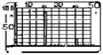
- 10
- 13
- 18
- 25
(정답률: 알수없음)
26. 튜브의 검사목적으로 만든 노치형 ASTM대비시험편의 홈은 어디 에 만드는가?
- 내면에만
- 내.외부 표면에 모두
- 외면에만
- 튜브 두께의 1/2깊이로 내면에
(정답률: 알수없음)
27. 용접부의 초음파탐상시험시 결함의 종류 판별에 영향을 주는 인자가 아닌 것은?
- 결함의 형상
- 결함의 위치
- 반사파의 크기
- 시험체의 두께
(정답률: 알수없음)
28. 이득형 초음파탐상장치에 게인(gain)을 6dB 올렸을 때 증폭 변화량은?
- 2배 감소
- 2배 증가
- 6배 감소
- 6배 증가
(정답률: 알수없음)
29. 초음파탐상시 결함길이 측정법으로 옳은 것은?
- Digital Image법
- Remote Field법
- 20dB Drop법
- 수직법
(정답률: 알수없음)
30. 용접부에 대한 초음파탐상시험에서 A-스캔법에 의해 지시가 나타났다. 지시의 양상은 아주 예리하고, 결함을 중심으로 처음 위치에서 보다도 비스듬하게 초음파를 입사시킨 결과 지시의 에코높이가 현저히 떨어졌다. 어떤 형태의 결함인가?
- 균열성
- 기공성
- 잡음성
- 개재물성
(정답률: 알수없음)
31. 어떤 단강품의 시험체를 건전부의 저면에코높이 100%로 탐상하였더니 A, B 2점으로부터 아래와 같은 탐상도형이 얻어졌다. 올바른 설명은?
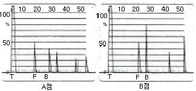
- 양쪽의 F에코는 같기 때문에 결함크기도 거의 동일하다.
- 양쪽의 F에코는 같으나 결함까지의 거리가 다르기 때문에 B점의 결함이 크다.
- A점의 F/BF가 크기 때문에 A점의 결함이 크다.
- A점의 BF가 작기 때문에 A점의 결함이 크다.
(정답률: 알수없음)
32. 그림과 같은 주사방법은?
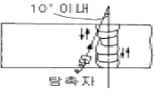
- 두갈래 주사
- 탠덤 주사
- 경사평행 주사
- 진자 주사
(정답률: 알수없음)
33. 다음 중 경사각 탐상시의 탐상감도 조정에 사용할 수 없는 시험편은?
- IIW
- STB-A3
- STB-G-V5
- RB-A6
(정답률: 알수없음)
34. 초음파 탐상장치의 스크린표시방법중 시험체의 평면을 표시하는 방식은?
- A-Scope 표시
- B-Scope 표시
- C-Scope 표시
- D-Scope 표시
(정답률: 알수없음)
35. 초음파탐상시험에서 분할형 탐촉자는 일차적으로 어디에 사용하는 것이 좋은가?
- 두꺼운 시험편의 결함 검출
- 초음파 특성 측정
- 얇은 재질의 두께측정 및 결함검출
- 감쇄측정
(정답률: 알수없음)
36. 인간의 가청 주파수를 초과하는 주파수의 음파를 초음파라 하는데, 이는 대략 얼마 이상의 주파수를 말하는가?
- 2kHz
- 20kHz
- 200kHz
- 2MHz
(정답률: 알수없음)
37. 수직탐촉자 5Q20N을 사용하여 STB G-V8의 인공결함을 측정할 때 결함에코 높이가 최대가 되는 탐촉자위치에서 저면에코 높이를 50%에 조정하였을 때는 25dB, 결함에코 높이가 50%일 때에는 40dB이었다면 결함에코 높이[F/BF]는?
- 4dB
- 10dB
- 6dB
- 20dB
(정답률: 알수없음)
38. 탐상도형에 나타난 결과로 결함(불연속부)의 형상을 정량적으로 측정하는데 가장 적합한 표시방법은?
- A 스코프(스캔)
- B 스코프
- C 스코프
- MA 스코프
(정답률: 알수없음)
39. 그림과 같이 경사각법으로 검사를 실시했을 때 CRT에 나타나는 탐상도형은?
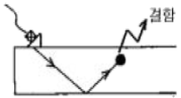
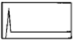
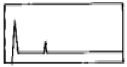
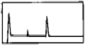
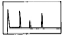
(정답률: 알수없음)
40. 탐상면이 곡률을 갖는 경우 탐촉자와 탐상면의 접촉면적에 따라 변할 수 있는 것은?
- 속도가 변한다.
- 주파수가 변한다.
- 분산각이 변한다.
- 아무 변화가 없다.
(정답률: 알수없음)
3과목: 초음파탐상관련규격 및 컴퓨터활용
41. AWS D1.1에 따른 불연속 검출시 사용되는 주사 패턴과 관련하여 그 내용이 적절치 않은 것은?
- 목돌림주사(주사이동 A)시 중앙빔을 중심으로 회전각도는 10도이다.
- 전후주사(주사이동 B)시 주사거리는 시험할 용접부의 단면을 포함할 수 있어야 한다.
- 지그재그주사(주소이동 C)시 진동자 진행거리는 진동자 폭만큼 한다.
- 경사평행주사(주사이동 E)시 용접 중심축과 이루는 각은 최대 15 도이다.
(정답률: 알수없음)
42. ASME Sec.Ⅴ, Art.5에 의한 초음파탐상검사를 하기 위해 직경 200mm의 곡률을 가진 재료로 대비시험편을 만들었을 때 이 시험편을 사용할 수 있는 시험체 직경의 범위는?
- 160mm이상 260mm미만
- 200mm이상 300mm미만
- 240mm이상 360mm이하
- 180mm이상 300mm이하
(정답률: 알수없음)
43. KS D 0233에 따른 압력용기용 강판의 초음파탐상검사에 분할형 수직 탐촉자를 사용할 때의 대비시험편은?
- RB-A4
- RB-C
- RB-D
- RB-E
(정답률: 알수없음)
44. ASME SA-388에서 대형 단강품의 검사를 위해 탐촉자를 주사할 때 주사속도와 중복 범위를 정하고 있다. 올바른 것은?
- 주사속도 150mm/sec이하, 중복범위 최소 15%
- 주사속도 200mm/sec이하, 중복범위 최소 10%
- 주사속도 150mm/sec이상, 중복범위 최소 10%
- 주사속도 200mm/sec이상, 중복범위 최소 15%
(정답률: 알수없음)
45. ASME Sec.V에서는 초음파 탐상결과 결함지시의 합부판정은 결함의 높이, 결함의 길이, 시험체의 두께에 따라 결정된다. 아래 표의 합부판정에 따라 a/ℓ = 0.32, a/t = 4.7, Y = 0.9인 결함의 Code 허용치 a/t값은 얼마인가? 또한 합격, 불합격의 여부는?
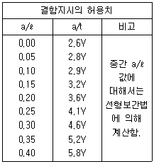
- 4.4, 불합격
- 4.6, 불합격
- 4.8, 합격
- 5.0, 합격
(정답률: 알수없음)
46. ASME Sec.V에서는 초음파 탐상결과 결함지시의 합부판정은 다음과 같이 한다. 그림과 같이 내압을 받는 면에 수직 및 수평선을 그어 결함지시를 정(직)사각형으로 나타낸다. 그림에서 길이 ℓ, 높이 2d, 표면에서 떨어진 거리 s일 때, 이 결함에서 a는? (단, 0.4d ＞ S : 이 결함은 표면하 결함 ⇒ a = 2d+S0.4d ≤S : 이 결함은 표면 결함 ⇒ a = d)
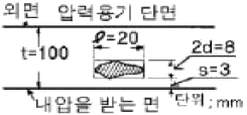
- 1.5mm
- 4mm
- 8mm
- 11mm
(정답률: 알수없음)
47. KS B 0896에서 용접부의 용접후 열처리에 대한 지정이 있을 경우 합격여부 판정을 위한 탐상 시기는?
- 열처리하기 바로 전
- 최종 열처리한 후
- 기계가공하기 전
- 기계가공후 열처리하기 바로 전
(정답률: 알수없음)
48. ASME Sec.V, Art.5에서 대비시험편의 재질 구성은?
- 시험체와 서로 상이한 열처리를 한다.
- 시험체와 P-No.가 다른 재질로 한다.
- 시험체와 동일한 재질의 사양과 등급 그리고 열처리를 한다.
- 시험체와 동일한 두께이다.
(정답률: 알수없음)
49. KS B 0896에 의거 수직탐촉자의 불감대를 특히 규정하지 않고도 탐상할 수 있는 빔 노정거리는?
- 10mm 이상
- 25mm 이상
- 50mm 이상
- 8mm 이상
(정답률: 알수없음)
50. KS D 0040에서 5Z5x20ND의 기호 중 ND가 의미하는 것은?
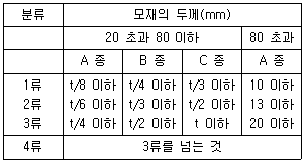
- 수직 탐촉자의 직경
- 송신용 탐촉자의 외경
- 진동자의 재질 기호
- 2진동자 수직 탐촉자 기호
(정답률: 알수없음)
51. KS B 0897 알루미늄 용접부의 초음파 경사각 탐상시험방법과 관련하여 두께 24mm, 두께 30mm의 두 판을 맞대기 완전용입 용접하였다. 이를 초음파탐상시험하여 길이 6mm 의 결함지시를 발견하였다. A종에 의한 흠의 분류는?
- 1류
- 2류
- 3류
- 4류
(정답률: 알수없음)
52. KS B 0817에는 탐상도형의 기본기호를 규정하고 있다. 다음 중 연결이 잘못된 것은?
- T : 송신펄스
- S : 표면에코
- B : 흠집에코
- W : 측면에코
(정답률: 알수없음)
53. KS B 0896 부속서2 원둘레이음 용접부의 탐상방법 규정에서 시험체의 곡률반지름이 300mm일 경우 에코높이 구분선의 작성과 탐상감도의 조정용 시험편은 어느 것인가?
- A3형계 STB
- RB-A6
- RB-A8
- RB-4
(정답률: 알수없음)
54. KS B 0897에서 규정하는 알루미늄 용접부의 초음파 경사각 탐상은 원칙적으로 어떤 탐상방법을 쓰는가?
- 1탐법
- 2탐법
- 3탐법
- 평행법
(정답률: 알수없음)
55. ASME Sec.V에서 절차서의 요건에 들어가지 않는 것은?
- 시험될 용접부 또는 재료의 종류와 형상
- 표면조건(상태)
- 접촉매질의 종류
- 탐촉자의 구입년도
(정답률: 알수없음)
56. 컴퓨터와 단말기 사이 또는 두 컴퓨터 사이에 데이터를 주고 받는데 적용되는 일련의 규칙들을 무엇이라 하는가?
- Topology
- Protocol
- ADSL
- ISDN
(정답률: 알수없음)
57. 컴퓨터의 CONFIG.SYS 파일에서 버퍼의 수를 지정하면?
- 메모리가 절약된다.
- 프로그램의 실행속도가 높아진다.
- DOS에서 필요한 부트 영역이 확장된다.
- 동시에 사용할 수 있는 파일의 수가 확장된다.
(정답률: 알수없음)
58. Windows98의 부팅방법 중 시스템에 문제가 있어 정상적으로 부팅이 안되고 최소한의 자원만으로 부팅할 수 있도록 하는 메뉴는?
- Normal
- Logged
- Safe Mode
- Step-by-Step confirmation
(정답률: 알수없음)
59. 컴퓨터 네트워크에서 상대방의 컴퓨터가 켜져 있는지 확인하기 위해서 사용할 수 있는 명령어는?
- PING
- ARP
- RARP
- IP
(정답률: 알수없음)
60. 다음 중 인터넷을 구성하는 망의 요소가 아닌 것은?
- 호스트
- 라우터
- 클라이언트
- 브라우저
(정답률: 알수없음)
4과목: 금속재료 및 용접일반
61. 다음 중 불활성가스 용접시 사용되는 가스 종류가 아닌것은?
- Ar
- Ne
- CO2
- He
(정답률: 알수없음)
62. 불활성가스 텅스텐 아크용접에서 용착금속 내에 기공이 발생하는 원인으로 다음 중 가장 적합한 것은?
- 용접 이음부의 수분과 유막
- 냉각 중 전극봉의 산화
- 이음부의 너무 좁은 홈 간격
- 용융 풀에 텅스텐 전극봉이 접촉
(정답률: 알수없음)
63. 보기 그림에서 필릿 용접의 목 길이에 해당하는 것은?
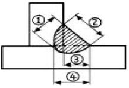
- ①
- ②
- ③
- ④
(정답률: 알수없음)
64. 일반적인 납땜시 용가재의 사용온도 중 경납 땜의 구분 온도는 몇[℃] 이상인가?
- 220
- 150
- 300
- 450
(정답률: 알수없음)
65. 모재 두께(Tmm)에 대하여 가스 용접봉의 지름(Dmm)의 선정에 관계되는 일반적인 식으로 가장 적합한 것은?
- D = T
- D =T/2+1
- D = T + 1
- D = 2T
(정답률: 알수없음)
66. 보기와 같이 서로 다른 압연(rolling) 방향을 갖는 연강판 "A"와 "B"판의 모재를 용접 하여 점선과 같이 인장시험편을 가공하였을 때 시험편에서 파단이 예상되는 단면으로가장 적합한 것은? (단, 용가재 강도는 모재와 동일)
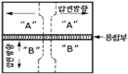
- "A"판 모재 부위에서
- "B"판 모재 부위에서
- 용접부위 내(內)에서 용접부와 대각선으로
- 용접부위 내(內)에서 용접부와 평행으로
(정답률: 알수없음)
67. 융해 아세틸렌 가스의 충전 후와 충전 전의 무게 차이가 5kgf이었다. 15℃, 1기압으로 환산하면 아세틸렌 가스의 충전 량은 약 몇 [ℓ] 정도인가?
- 1500
- 2525
- 3525
- 4525
(정답률: 알수없음)
68. 아크용접에서 아크 쏠림의 방치책으로 틀린 것은?
- 교류 용접으로 할 것
- 짧은 아크를 사용할 것
- 긴 용접부에서는 전진법으로 할 것
- 접지점을 용접부로부터 될 수 있는 한 멀리 할 것
(정답률: 알수없음)
69. 일반적인 서브머지드 아크용접의 장점에 대한 설명으로 틀린 것은?
- 용융속도 및 용착 속도가 빠르다.
- 개선각을 작게하여 용접 패스 수를 줄일 수 있다.
- 유해 광선이나 퓸(fume) 등이 적게 발생되어 작업환경이 깨끗하다.
- 용접선이 짧거나 복잡한 경우 수동에 비하여 능률적이다.
(정답률: 알수없음)
70. 아크용접기에서 AW - 300에서 정격 2차전류값은 얼마인가?
- 30[A]
- 300[A]
- 60[A]
- 150[A]
(정답률: 알수없음)
71. X선으로 반사법을 이용하여 금속의 결정구조를 측정할 때 결정면의 면간 거리를 나타내는 식은? (단, d:면간거리, n:정정수(正整數), λ:파장)
- d=nλ/2sinθ
- d=2sinθ/nλ
- d=nλsinθ
- d=λsinθ
(정답률: 알수없음)
72. 공정(共晶)계 합금의 특징을 바르게 설명한 것은?
- 한 원자의 격자점에 다른 원자가 전부 치환되어 고용 된다.
- 2 종 이상의 금속원소가 간단한 원자비로 결합되어 본래의 물질과는 전혀 별개의 물질이 형성된다.
- 어떤 일정한 온도에서 정출된 고용체와 동시에 이와 공존된 용액이 서로 반응을 일으켜 새로운 다른 고용체를 형성한다.
- 2 개의 금속이 용해된 상태에서는 균일한 용액으로 되나 응고점에서 2개의 금속이 따로 따로 정출된다.
(정답률: 알수없음)
73. Fe2O3를 주성분으로 한 철광석은?
- 자철광
- 적철광
- 갈철광
- 능철광
(정답률: 알수없음)
74. 수소저장합금의 특징이 아닌 것은?
- 무공해연료라고 할 수 있다.
- 수소가스와 반응하여 금속수소화물이 된다.
- 수소의 흡장·방출을 되풀이 하는 재료는 분화하게 된다.
- 수소가 방출하면 금속수소화물은 원래의 수소저장합금으로 되돌아가지 않는다.
(정답률: 알수없음)
75. 파면에 따른 선철의 분류에 속하지 않는 것은?
- 백선철
- 목탄선철
- 회선철
- 반선철
(정답률: 알수없음)
76. Aℓ의 열처리 기호 중 틀린 것은?
- H : 가공경화된 재질
- T4 : 제조 후 바로 뜨임처리한 재질
- T6 : 담금질 후 인공시효 처리한 재질
- T7 : 담금질 후 안정화 처리한 재질
(정답률: 알수없음)
77. 합금이 순금속보다 좋은 성질은?
- 가단성
- 열전도율
- 전기 전도율
- 경도 및 강도
(정답률: 알수없음)
78. 다음 중 면결함인 것은?
- 원자공공
- 전위
- 적층결함
- 주조결함
(정답률: 알수없음)
79. 항복점 현상이 가장 잘 나타나는 금속은?
- 알루미늄합금
- 니켈합금
- 아연합금
- 저탄소강
(정답률: 알수없음)
80. 초경합금의 특성을 설명한 것 중 틀린 것은?
- 내마모성이 높다.
- 고온경도가 높다.
- 압축강도가 낮다.
- 재질종류 및 형상이 다양하다.
(정답률: 알수없음)